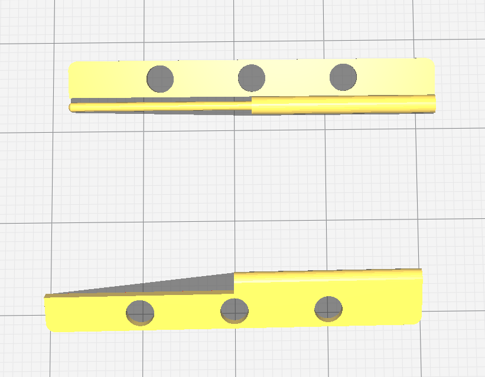

Week 2
For this week, I focused on the hardware side of things. Everything was fine except for the hinge. Since the box itself is small, this means that the hinge will also be small. When i tried 3D printing it, it just would not work.
{kind=link}
There are multiple reasons why.
- Since the hinge is small,the structural integrity is not there. Therefore, if i were to screw it onto my box, there is a high probability that my hinge will break
- Also because of the same reason, my connector is just to small and thin so the possibility of the hinge being able to open the cover without breaking is slim to none.
With that, I got some advice and suggestions from my lecturers and decided to buy a hinge and instead of putting it outside of the box, i have decided to put it inside. Since i no longer have a 3D printed component for my project, I had to find a new way to incoperate it in my project so i decided to 3D print the inside of my box. In my opinion, it looks great however the only downside is that it takes approximately 7 hours to 3D print it. It currently has dimensions of 190mm x 90mm x 45mm. The total box dimension is 200mm x 100mm x 100mm.

My finalized idea was to only 3D print the media control portion and to laser cut the rest, connecting it with tabs and gluing the laser cut part with the 3D printed part. This way, my 3D printing time will be cut substantially. It will also be connected to the front and back side of the box via tabs.
| 3D Printed | Laser Cut |
|---|---|
 |
 |
Next I designed an opening at the back of my box so as to allow the arduino ports to come out the back. I also used a smaller breadboard so as to be able to fit it in the actual box. My final idea for the box is to let one of the sides unattached so that we are able to take out the DFPlayer and edit the SD card on it. As for the speaker infront, i will be using the speakers as shown below, and as for the measurements, i measured the biggest diameter of the back of the speaker so that it will be more or less flushed when fitting into the hole.


The diameter of the speaker is about 48mm so i decided to make it to 50mm. I also made it so that it will me more or less in the middle of the front part of the box. The challenging part i feel like was to measure for the back of the speaker. If i were to increase the width of the media control part, it also means i have a smaller space to put my things in so i made it so that it fits just nice to the back wall of my inside wall with a clearance of about 3 mm.
| Front View | Side View |
|---|---|
 |
 |
As for the cherry on top, I asked for the help of my friend to draw up a simple design to spice up my box abit and she actually came through with a few designs. I initially wanted to add designs throughout the entire box but due to time constraints and not starting on my programming yet, i decided to skip that step. Below shows here drawing and how i incorperated it into my design. Below also shows my final design on Fusion for now before any adjustments.